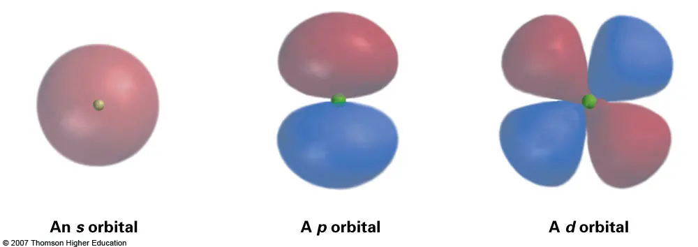
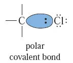
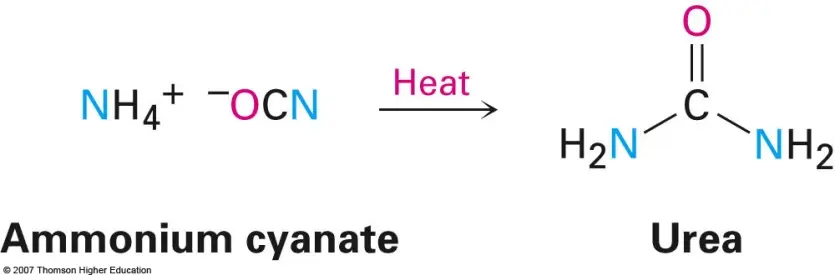

只有 1 个轨道，角分布为球对称；不同主量子数的 s 轨道具有不同径向节点。
LECTURE 01
有机化学基础：介绍与回顾
Introduction and Review
原子与电子
化学键
分子间作用力
结构表示
1. 有机化学研究什么？
有机化学最初主要研究从生物体获得的物质，因此名称与“生命”有关；现代定义则是研究碳化合物的结构、性质、反应与合成。并非所有含碳物质都惯例归入有机化学，CO、CO₂、碳酸盐和多数碳化物通常仍由无机化学讨论。
对速记的修正
“以碳为中心，研究碳氢化合物及其衍生物”适合作为入门概括，但边界是历史形成的分类习惯，而不是由一条绝对规则决定。
2. 原子轨道与电子结构
原子轨道是薛定谔方程的一电子波函数；轨道不是电子运行的固定路径。轨道波函数的平方 |ψ|² 给出概率密度，通常所说的“电子云”就是这种空间分布的可视化。
有 3 个互相正交的轨道 pₓ、pᵧ、p_z。每个轨道常画成哑铃形，两瓣波函数相位相反。
有 5 个轨道。四个常呈四叶形，d_z² 则具有两瓣加环形区域，不能一概称为“四叶草”。
基态电子排布通常遵循构造原理、泡利不相容原理与洪特规则。有机化学最常处理 s、p 轨道及其杂化；涉及所谓“d 轨道参与”时通常需要更谨慎的现代成键解释。
3. 化学键与键极性
离子键可理解为相反电荷离子之间的静电吸引，典型形成过程伴随显著电子转移；共价键则来自原子间共享电子密度。真实化学键经常处在“纯离子”与“纯共价”两种极限之间。
电负性描述成键原子吸引共享电子的相对能力。主族元素通常沿周期从左到右增大、沿族从上到下减小。电负性差异造成键极性；C–H 键极性较弱，在很多有机反应分析中近似视为非极性，但并非严格没有偶极。
4. 亲电性、亲核性与 Lewis 酸碱
Lewis 酸接受电子对，Lewis 碱提供电子对；因此典型的亲电体是缺电子、能接受电子对的反应中心，典型的亲核体是富电子、能提供电子对的粒子。机理中的弯箭头总是从亲核体（电子源）指向亲电体（电子汇）。
亲电体常表现为 Lewis 酸，亲核体常表现为 Lewis 碱；例如羰基碳是亲电中心，羰基氧既有孤对电子又可作 Lewis 碱。
Lewis 酸碱性偏向电子对结合的热力学描述；亲电性/亲核性更强调具体反应中的速率与选择性，会受溶剂、位阻、反离子和温度影响。
强 Lewis 碱未必是强亲核体（叔丁醇盐位阻大）；能接受电子对的 Lewis 酸也未必在某一反应中表现为高活性的亲电体。
| 术语 | 电子角色 | 常见例子 | 判断重点 |
|---|---|---|---|
| Lewis 酸 | 接受电子对 | H⁺、BF₃、AlCl₃ | 电子对结合与平衡 |
| Lewis 碱 | 提供电子对 | NH₃、OH⁻、I⁻ | 孤对电子可用性 |
| 亲电体 | 反应中接受电子对 | 羰基碳、碳正离子 | 动力学、位阻与选择性 |
| 亲核体 | 反应中提供电子对 | CN⁻、烯醇负离子 | 动力学、溶剂化与极化性 |
5. 分子间作用力
6. 形式电荷与结构式
形式电荷是一种电子记账方式，不等于实验测得的局部电荷。通式为：形式电荷 = 价电子数 − 非成键电子数 − ½ × 成键电子数。它尤其适合追踪反应机理中的电子流和比较共振贡献式。
路易斯结构式明确表示成键电子对与孤对电子；缩合结构式压缩重复片段；键线式省略大多数与碳相连的氢和碳元素符号，是有机化学最常用的表示方式。
7. 共振：不是结构之间来回跳动
当同一原子排列能够写出多种只在电子分布上不同的合理路易斯结构时，这些假想结构称为共振贡献式。真实分子始终是一个共振杂化体，不是在几个贡献式之间快速切换，也不是只在“极端情况”才表现某一种结构。
判断是否属于共振
原子核位置与 σ 键骨架保持不变，只重新安排孤对电子、π 电子和形式电荷。贡献式之间用双头共振箭头连接，不能使用化学平衡箭头。
8. 课堂图示补充
以下图示直接取自本章课堂课件，用来对照原子轨道、Lewis 结构、键极性和有机化学早期发展中的关键例子。



